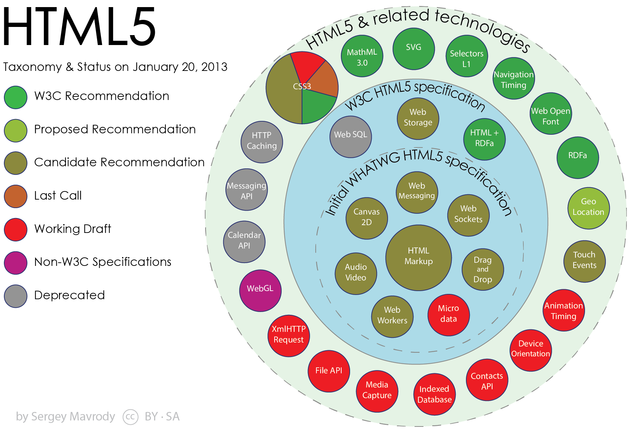
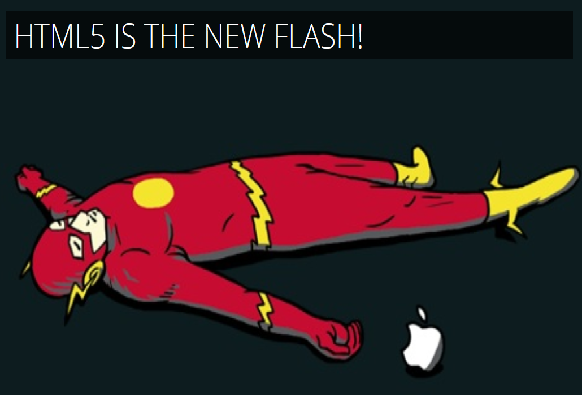

The changing Landscape
Front End Web Development
Prashanth Batchu
(Enterprise Web Development Team)
November 20, 2013
Agenda
- A quick walk through memory lane
- HTML - The original Intent
- Javascript's History
- Rise of the Web
- The way we use currently use JS
- JS: A helper Library
- jQuery & Co.
- Limitations & Change of User & Business expectations
- A new Paradigm
- Emergence of new JS frameworks
- Introduction to AngularJS
- Challenges
- Q&A
HTML - The original intent
 1993
1993
|
 The present
The present
|
HTML Milestones
- 1989: Tim Berners-Lee invents the Web with HTML as its publishing language
- Late 1994: The World Wide Web Consortium forms
- November 1995: Vendors unite to form a new group dedicated to developing an HTML standard which will be dismantled in a couple of years since then
- November 1995: Style sheets for HTML documents begin to take shape
- December 1997: HTML 4.0 was published as a W3C Recommendation
- January 2008: HTML5 was published as a Working Draft (link) by the W3C - Still a work in progress
- September 2012: W3C proposed a plan[29] to release a stable HTML5 Recommendation by the end of 2014 and an HTML 5.1 specification Recommendation by the end of 2016
HTML5
What's new? HTML expanded to support new APIs, brings in additional markup and limited backward compatability.
Summarizing HTML5
- Too little too late?
- Necessary but not sufficient?
- HTML5 - The broken promises?
JavaScript
- Loosely typed, Expressive, Prototypal, dynamically typed
- Has more in common with Lisp, Self and Scheme than with Java. It is Lisp in C’s clothing
- Functions are first class objects with (mostly) lexical scoping
- Class-free object system
- Has a very powerful object literal notation
- Ubiquitous in all modern browsers.
JavaScript Milestones
- May 1995: Created in 10 days by Brendan Eich
- 1996 - 1997: Taken to ECMA to carve out a standard specification. ECMAScript v2 in 1998, v3 in 1999
- 2001: Douglas Crockford named and documented JSON (JavaScript Object Notation) – a Lisp-inspired idea to use JavaScript syntax to store data in text format.
- 2005: Jesse James Garrett coins the term AJAX.
- 2007: Webkit becomes the foundation of the mobile web
- 2008: Rename ECMAScript 3.1 to ECMAScript 5 and drive the language forward using an agenda that is known as Harmony
- 2009: Node.js - JavaScript on the server
- 2009 to Present - Paradigm shift in the way we use JavaScript
Traditional uses of JavaScript
- Realtime DOM manipulation
- AJAX
- Handling Browser Events
- Limited Animation
Rise of the Web
- The Web Browser becomes Ubiquitous with HTML, CSS & JS as the De Facto technologies resisting any alternatives
- Thin clients win over Thick clients
- AJAX drive up demand for Desktop style web applications
- Apple effectively pushes Flash out of existence
- JavaScript stands its ground
- User and Business expectations constantly push for more complex and interactive web apps
Browser Vs JavaScript
- Browser proliferation with varied support for JS dialects create unique set of challenges for developing Web Apps
- Increase in scope and complexity of web apps over time with the introduction of AJAX, severe limitations of HTML and a stale and stuck version upgrade process to support the development of highly interactive and catch up with the changes happening to JavaScript, Proliferation of JavaScript dialects among browsers, lack of adoption of suitable alternatives to JS have all led to rethink how we perceive JavaScript
A Solution Kick the can down the road
- Abstract away from JavaScript: jQuery, DOJO, Mootools etc.
- Avoid the problem in its entirety: GWT, Vaadin, Opal, Dart, IronPython, IronRuby, HotRuby, Livescript etc.
What's wrong with Abstraction?
- In an ideal world where browsers play nice, jQuery shouldn't have an existence. But it does exist to make Front End development less hellish for developers. jQuery fills some of the gaps occurred because of JS proliferation which should not have happened.
- Abstraction limits
- Reusability: As we end up tying the DOM (manipulation, attachment) to Business logic
- Testability: Limits our ability to test when business logic is tied to DOM element structure (IDs, Classes etc.)
- Maintainability: No proper native development paradigm coupled with increasing business need for highly interactive and complex workflows and lack of adaption of proper design patterns increases the lines of source code without proper organization making it extremely difficult to maintain over time.
Paradigm Shift
- Declarative rather than Imperative suits Front End Development
- Need a MV* pattern and a Modular approach to solve many of the maintainability and reusability issues
- Ground up support for Testing
- Embrace & Expand on but not shun HTML
- Limit DOM manipulation whenever possible or avoid it completely or do it a controlled resuable way
Developer community's reaction
- Backbone.js
- AngularJS
- Ember.js
- KnockoutJS
- Dojo
- YUI
- Agility.js
- Knockback.js
- CanJS
- Maria
- Polymer
- cujoJS
- dermis
- Montage
- Ext.js
- Sammy.js
- Stapes
- Epitome
- soma.js
- DUEL
- Kendo UI
- PureMVC
- Olives
- PlastronJS
- Dijon
- rAppid.js
-
Knockout +
ClassBinding - DeftJS + ExtJS
- Aria Templates
-
Enyo +
Backbone.js -
AngularJS
(optimized) - React
- SAPUI5
- Exoskeleton
- Atma.js
- * R = App also demonstrates routing
- * Maroon = App requires further work to comply with the spec
Compile To JavaScript
MVC Extension Frameworks
Module Loaders
- Backbone.js + RequireJS
- Flight
- Knockout + RequireJS
- AngularJS + RequireJS
- CanJS + RequireJS
- TroopJS + RequireJS
- Thorax + Lumbar
- soma.js + RequireJS
- Durandal
- Lavaca + RequireJS
Real-time

Angular JS represents one such framework which represents this new paradigm.
Angular JS
“AngularJS is a structural meta framework for developing modern dynamic web applications”

An End to End solution
- Reusability: Using Directives and Services
- Maintainability:
- Modular Architecture (Module)
- Supports MV* pattern: Controllers, Views (ViewModel - $scope, Services, Factories
- Two Way Data Binding
- Declarative style
- Dependency Injection
- Testability:
- Everything is Dependency Injected.
- Mocks provided for the framework by default
- Testing support from the ground up using Karma/li>
- Browser Support: Tested extensively against Safari, Chrome, Firefox, Opera, IE8, IE9 and mobile browsers (Android, Chrome Mobile, iOS Safari)
//Module declaration
angular.module('shinyApp', ['global_service_1','global_service_2']);
//Service declaration
shinyApp.service('shinyService', function($resource, $q) {
});
- A module acts as a container for other AngularJS managed objects.
- A controller has a $scope variable which acts as the glue between the controller and the view to enable two way data binding.
//Controller declaration
shinyApp.controller('shinyCtrl', function($scope,shinyService) {
//Everything in $scope will be made available to the html partial
$scope.message = shinyService.getMessage();//'Hello World';
});
{{message}}
- When a URL is invoked, a new instance of its associated Controller is created.
- This controller is injected with all of its dependencies(The service in this case) including a $scope variable.
- The service interacts with the REST Api using $resource Angular service and returns the response to the Controller.
Angular supports Two way Data Binding


- Data-binding: Automatic synchronization of data between the model and view components.
- Treat the model as the single-source-of-truth in your application.
- The view is a projection of the model at all times. When the model changes, the view reflects the change, and vice versa.


Directives

Directives


Challenges
- Functional Thinking: JavaScript name sounds close to Java but that's where the similarities end. Support of Closure and other Functional characteristics
- Understanding its bad parts
- Functions are first class citizens
- Getting acquainted with the new Ecosystem
References will be made available along with these slides
Q&A
Under the Hood


Type in your Name

Dependency Injection
DI in controllers
var MyController = function($scope, dep1, dep2) {
...
$scope.aMethod = function() {
...
}
}
MyController.$inject = ['$scope', 'dep1', 'dep2'];
Factory Methods
angular.module('myModule', []).
config(['depProvider', function(depProvider){
...
}]).
factory('serviceId', ['depService', function(depService) {
...
}]).
directive('directiveName', ['depService', function(depService) {
...
}]).
filter('filterName', ['depService', function(depService) {
...
}]).
run(['depService', function(depService) {
...
}]);
Angular JS Module Example DEMO
Testing
...
it('should render phone specific links', function() {
input('query').enter('nexus');
element('.phones li a').click();
expect(browser().location().url()).toBe('/phones/nexus-s');
});
...
Debugging
Best Practices

Yo scaffolds out a new application, writing your Grunt configuration and pulling in relevant Grunt tasks that you might need for your build.
Grunt is used to build, preview and test your project, thanks to help from tasks curated by the Yeoman team and grunt-contrib.
Bower is used for dependency management, so that you no longer have to manually download and manage your scripts.
Resources
Walkthrough a Web App with Angular
- Brief introduction to the example Application
- A simple CRUD app
- Business use - Bill splitting between friends
- Project goal - Promote Community Learning (Open Source)
Walkthrough a Web App with Angular
- Setup
- Frontend - Angular JS, Bootstrap CSS, Angular Strap
- Backend - Java EE, Spring MVC REST, JPA with Hibernate
- Database - MySQL
- Application Server - Tomcat (Neutral)
Walkthrough a Web App with Angular
- Design & Arch
- Frontend - MVC
- Backend - MVC
- Interface - REST
- Data Transfer - JSON
Walkthrough
- Fire up the MySQL DB instance
- Start Tomcat and deploy the service. Test an endpoint
- Run the client
- Use the app
Transition Styles
You can select from different transitions, like:
Cube -
Page -
Concave -
Zoom -
Linear -
Fade -
None -
Default
Themes
Reveal.js comes with a few themes built in:
Default -
Sky -
Beige -
Simple -
Serif -
Night
Moon -
Simple -
Solarized
* Theme demos are loaded after the presentation which leads to flicker. In production you should load your theme in the <head> using a <link>.
Global State
Set data-state="something" on a slide and "something"
will be added as a class to the document element when the slide is open. This lets you
apply broader style changes, like switching the background.
Custom Events
Additionally custom events can be triggered on a per slide basis by binding to the data-state name.
Reveal.addEventListener( 'customevent', function() {
console.log( '"customevent" has fired' );
} );
Slide Backgrounds
Set data-background="#007777" on a slide to change the full page background to the given color. All CSS color formats are supported.
Image Backgrounds
<section data-background="image.png">Repeated Image Backgrounds
<section data-background="image.png" data-background-repeat="repeat" data-background-size="100px">Background Transitions
Pass reveal.js the backgroundTransition: 'slide' config argument to make backgrounds slide rather than fade.
Background Transition Override
You can override background transitions per slide by using data-background-transition="slide".
Clever Quotes
These guys come in two forms, inline:
“The nice thing about standards is that there are so many to choose from”
and block:
“For years there has been a theory that millions of monkeys typing at random on millions of typewriters would reproduce the entire works of Shakespeare. The Internet has proven this theory to be untrue.”
Pretty Code
function linkify( selector ) {
if( supports3DTransforms ) {
var nodes = document.querySelectorAll( selector );
for( var i = 0, len = nodes.length; i < len; i++ ) {
var node = nodes[i];
if( !node.className ) {
node.className += ' roll';
}
}
}
}
Courtesy of highlight.js.
Intergalactic Interconnections
You can link between slides internally, like this.
Fragmented Views
Hit the next arrow...
... to step through ...
any type- of view
- fragments
Fragment Styles
There's a few styles of fragments, like:
grow
shrink
roll-in
fade-out
highlight-red
highlight-green
highlight-blue
Spectacular image!

Export to PDF
Presentations can be exported to PDF, below is an example that's been uploaded to SlideShare.
Take a Moment
Press b or period on your keyboard to enter the 'paused' mode. This mode is helpful when you want to take distracting slides off the screen during a presentation.